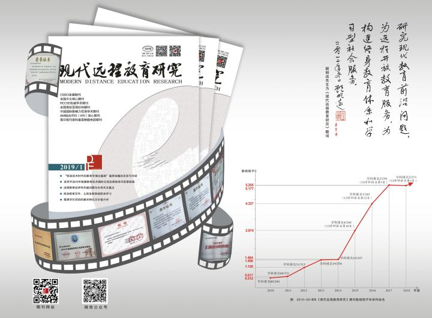

现代远程教育研究：http://xdyjyj.scou.cn【自2018年4月启用新网址】 《现代远程教育研究》是远程教育综合性学术期刊，是中文社会科学引文索引（CSSCI）来源期刊、全国中文核心期刊、中国社会科学评价研究院AMI综合评价（A刊）核心期刊、中国科学评价研究中心（RCCSE）权威学术期刊、中国国际影响力优秀学术期刊、全国高校百强社科期刊、复印报刊资料重要转载来源期刊。期刊为双月刊，国内外公开发行。热忱欢迎国（境）内外远程教育及相关专业领域的学者和研究者投稿。  办刊成效： 《现代远程教育研究》于2012-2019年连续四次入选南京大学中文社会科学引文索引CSSCI（2012-2013）、（2014-2016）、（2017-2018）、（2019-2020）来源期刊目录； 2018年入选北京大学《中文核心期刊要目总览》（2017版）（北核）、中国社会科学评价研究院“AMI综合评价（A刊）核心期刊”；2017年入选“RCCSE（2017-2018）权威学术期刊（A+）”；2016-2018 年连续三次入选“中国国际影响力优秀学术期刊”。至2018年，《现代远程教育研究》正式进入了全国所有重要的学术期刊评价体系。 2010年《现代远程教育研究》被评为“全国高校优秀社科期刊”、江苏省高校学报评优一等奖；2010-2018年，连续9年被复印报刊资料列为“重要转载来源期刊”； 2013、2015、2017年连续三次被评为“江苏省社会科学优秀学术期刊”；2014年被评为“全国高校百强社科期刊”； 2018年获江苏省社科学术期刊协会“创新进步奖”。 主编田党瑞曾先后获得“江苏省高校社科期刊优秀主编”（2011年）、首届“玉笔奖”（2012年）、“全国高校社科期刊优秀主编”（2014年）、中国期刊协会“从事期刊出版工作30年”荣誉证书（2019年）、在全国高校文科学报研究会成立30周年征文中以《蓦然回首 缘在心中》获“编缘”铜奖（2018年）；编辑汪燕2016年被评为“中国教育技术协会期刊优秀编辑”；编辑刘选2017年被评为“第三届江苏省社会科学学术期刊优秀编辑”。 现代远程教育研究微信公众号
|
泰州市广播电视大学-江苏广播电视大学版权所有 | 江苏省成都市一环路西3段3号（610073） | 招生热线：87797791 学校办公室：87778170 | 蜀ICP备05000866号-